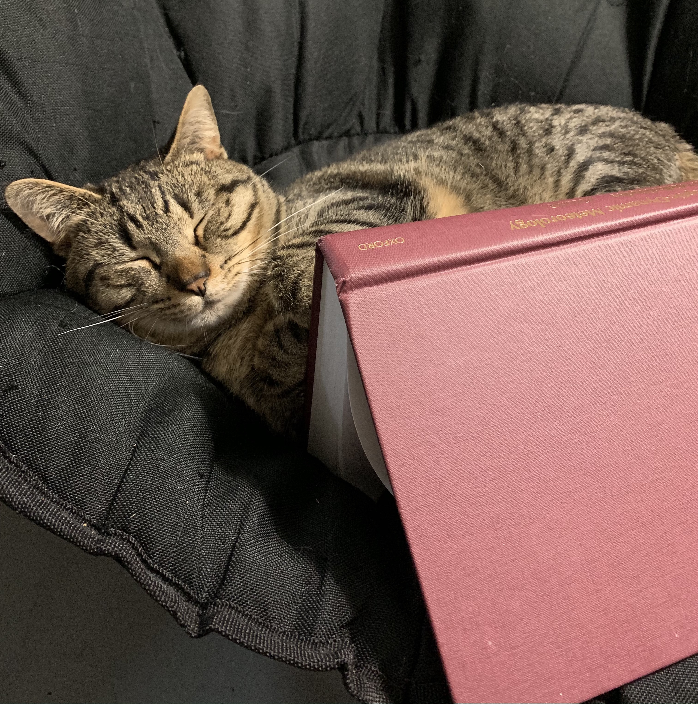

My cat, Clawsius-Catteyron, napping next to a copy of Synoptic-Dynamic Meteorology in Midlatitudes, Vol. 1.
Scientific Writing
- The Elements of Style (Illustrated) by William Strunk, Jr. and E.B. White / illustrated by Maira Kalman
- Writing Science in Plain English by Anne E. Greene
- Eloquent Science: A Practical Guide to Becoming a Better Writer, Speaker and Scientist by David M. Schultz
- On Writing Well: The Classic Guide to Writing Nonfiction by William Zinsser
General Career Advice
- The Early Career Researcher's Toolbox by Andres De Los Reyes
- The Essential Guide to Turning Your PhD into a Job by Karen Kelsky